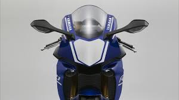

Yamaha
Yamaha Motor Company (Japans: ヤマハ発動機株式会社, Yamaha Hatsudōki K.K.; Engels: Yamaha Motor Co., Ltd.) is een grote Japanse producent van motorfietsen, quads en scheepsmotoren, waaronder buitenboordmotoren, die onderdeel uitmaakt van het Yamaha-conglomeraat en zetelt in Iwata.
 Historie Het Japanse merk werd opgericht door de orgelbouwer Taraguchi (of Torakusu) Yamaha. Zijn bedrijf Nippon Gakki, dat al vanaf 1897 muziekinstrumenten maakte, begon in 1954 motorfietsen te bouwen. De eerste waren 48cc- en 125cc-tweetakten, in feite kopieën van de DKW RT 125. Dit werd de Yamaha YA 1 Red Dragonfly. Later kwam er een kopie van de Adler MB 250, de YD 1. Er werd een nieuwe fabriek in Iwata gebouwd. De tweetakten werden in sneltreinvaart doorontwikkeld: in 1961 had men racemachines met roterende inlaten, in 1964 kwamen er membraaninlaten en automatische smering (autolube). Met wat zwaardere typen werden grote successen in de wegrace geboekt en vanaf de XS 650-tweecilinder in 1969 kwamen er ook viertakten. Tegenwoordig behoort Yamaha tot de grootste motorfietsproducenten, met machines in alle klassen en categorieën, ook op sportgebied. Het merk is toonaangevend op het gebied van viertaktenduro-, offroad- en allroadmachines. Waar het merk echter in de jaren 70 en 80 van de vorige eeuw in Nederland ook een belangrijk marktaandeel in de 50cc-klasse had met bijvoorbeeld de tweetakten FS-I (een belangrijke concurrent van Honda's legendarische SS 50 met viertaktmotor) en de DT50, verkoopt Yamaha op dit moment vrijwel alleen nog scooters in deze klasse. Met uitzondering van de TZR 50 schakelbrommer. Yamaha Motor Corporation produceert behalve motorfietsen ook buitenboordmotoren, waterscooters, motorbootjes, quads, sneeuwmobielen en golfwagentjes. Yamaha heeft ook motoren voor auto's van andere merken gemaakt, onder andere V8-motoren voor de Ford Taurus SHO, Volvo S80 en XC90.